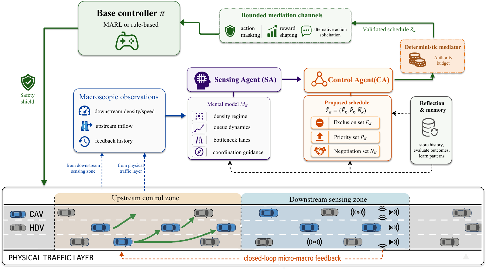
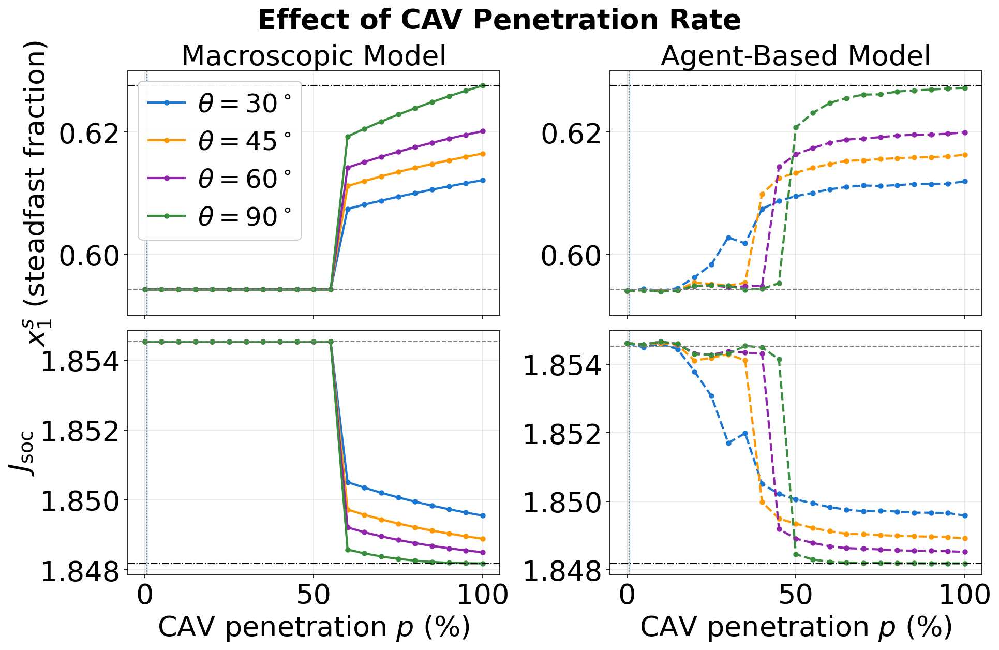

Topology-Aware Congestion Pricing: Demand-Robust Routing using the Forman–Ricci Curvature
IEEE Control Systems Letters (L-CSS)
Topology-aware congestion pricing using Forman–Ricci curvature to support demand-robust routing.
Hi! I’m Kexin Wang, a Ph.D. student in Civil Engineering at the University of Southern California, advised by Prof. Ruolin Li.
I study how intelligent agents can make better decisions together, especially when they share the road. My research combines game theory, multi-agent learning, and foundation models to connect individual decisions with system-level goals. My current work explores coordination in mixed-autonomy traffic, cooperation between different autonomous driving models, and how vehicle-level decisions collectively shape transportation systems.
Currently thinking about: mixed-autonomy coordination heterogeneous driving models multi-agent learning local decisions ↔ system dynamics
Email: kwang255@usc.edu
IEEE Control Systems Letters (L-CSS)
Topology-aware congestion pricing using Forman–Ricci curvature to support demand-robust routing.

NeurIPS 2026 Workshop on Agents in the Wild: Safety, Security, and Beyond
A bounded mediation architecture that limits LLM execution authority through a deterministic mediator, action masking, and reward shaping.

6th IFAC Workshop on Cyber-Physical & Human-Systems
An agent-based study of evolutionary dynamics in mixed-autonomy weaving ramps and the effects of CAV penetration on traffic outcomes.

Submitted to The 2027 American Control Conference (ACC)
A predictive lane-change coordination framework that aligns vehicle-level decisions with macroscopic traffic conditions using arrival-state predictions and congestion gradients.

arXiv
A Stackelberg-Wardrop framework for strategic autonomous agents shaping equilibrium behavior.

arXiv
A network equilibrium model for mixed AV/HV ride-hailing fleets, customer waiting, and platform decisions.

IEEE ITSC 2025
A Wardrop-equilibrium formulation of aggregate lane-choice behavior for mainline vehicles at highway weaving ramps.